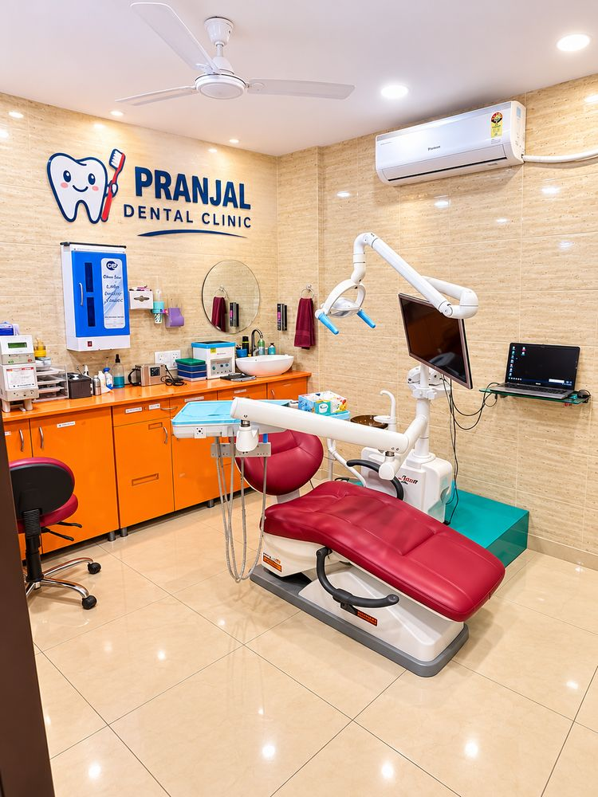
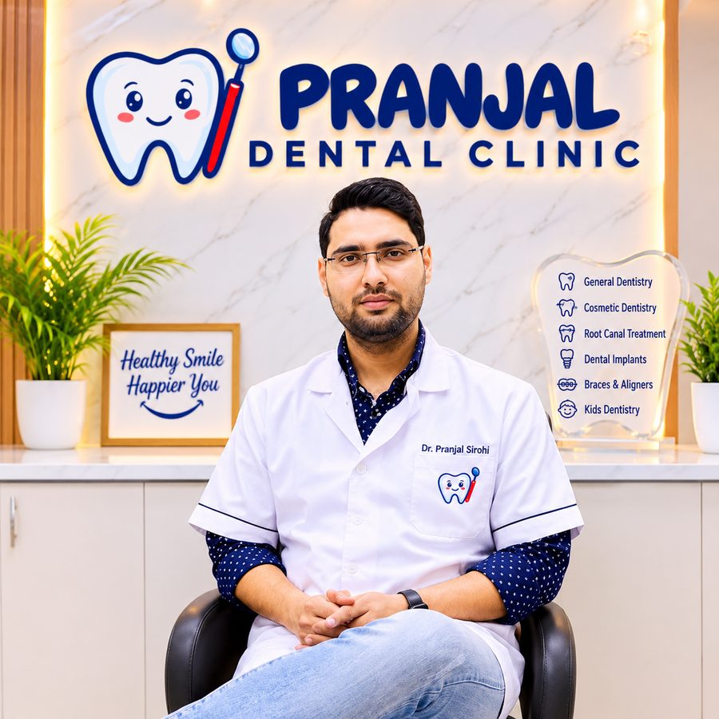

Guide
How to Choose a Dentist Near You in Greater Noida
A practical checklist for choosing a dental clinic you can trust for you and your family.
Read article →Pranjal Dental Clinic is a friendly neighbourhood dental clinic in Jagat Farm, Greater Noida, caring for children, adults and grandparents with gentle, comfortable treatment.

Comfortable treatment that puts nervous patients at ease.
Healthy, confident teeth you will love to show off.
Welcoming the whole family, from kids to grandparents.

Oro-Facial Surgeon · Dentist in Greater Noida
Dr. Pranjal Sirohi leads Pranjal Dental Clinic and plans every patient's treatment personally. He explains what he finds in plain language, discusses the options and cost upfront, and never recommends treatment you do not need.
At Pranjal Dental Clinic we believe a dental visit should feel calm, not stressful. We listen first, explain your options in simple language, and plan treatment around your comfort and budget.
Located in F.S. Plaza, Jagat Farm, we are a convenient choice for families in Jagat Farm (Gamma 1), Beta 1, Alpha 1 and nearby sectors of Greater Noida, as well as Greater Noida West (Noida Extension) and Noida.
From a simple check-up to a full smile makeover, here is what we do at our Jagat Farm clinic in Greater Noida.
Fast guidance and treatment for sudden pain, swelling or injury.
Learn more →Strong, natural-looking restorations for damaged or missing teeth.
Learn more →Professional cleaning and care for bleeding, swollen or receding gums.
Learn more →A calm, clean and friendly space for the whole family. Tap any photo to see it bigger.
See how simple it is. Watch the short video of a visitor using the AI check-up kiosk at Pranjal Dental Clinic, and try it yourself on your next visit.
We go at your pace, explain every step and never rush you.
You know the treatment and the estimate before work begins. No surprises.
Careful sterilisation and hygiene so every visit is safe.
One clinic for children, parents and grandparents.
Call or WhatsApp us to book, or simply walk in at F.S. Plaza.
Tell us what worries you. We check your teeth and gums gently.
We explain options and costs in simple Hindi or English.
Treatment begins only when you are comfortable and ready.
GF - 1/2, F.S. Plaza, Jagat Farm,
Greater Noida, (U.P.)
Finding a dentist you trust is not easy. Most people begin by searching for a dentist in Greater Noida or a dental clinic near me, and then judge the clinic on how it makes them feel: whether the team listens, whether the problem is explained in plain words and whether the cost is clear before treatment begins. Pranjal Dental Clinic was built around exactly those expectations.
We are on the ground floor of F.S. Plaza in Jagat Farm, in Gamma 1, Greater Noida. Patients come to us from Gamma 1, Beta 1, Alpha 1 and nearby sectors, as well as from Greater Noida West (Noida Extension) and Noida. Dr. Pranjal Sirohi (BDS, MDS) looks after patients of all ages, from a child's first check-up to complex adult treatment.
Our treatments include root canal in Greater Noida, dental implants in Greater Noida, braces in Greater Noida, kids dentist in Greater Noida, teeth whitening in Greater Noida, emergency dentist in Greater Noida care and wisdom tooth removal in Greater Noida.
Straighter teeth are easier to clean, bite together more evenly and look better, which is why braces and clear aligners are among the most asked-about treatments at our clinic. Teenagers often begin with braces, while many adults choose clear aligners or tooth-coloured braces because they are less noticeable at work.
Which option is right depends on your teeth, your bite and your lifestyle. We examine your teeth, explain the choices honestly and give you an estimate, whether you are comparing clear aligners cost in Greater Noida or looking for affordable braces. Our braces and aligners page covers each option in detail.
Searches such as orthodontist near me, braces specialist near me, clear aligner dentist near me or smile makeover dentist near me all lead to the same question: which clinic is right for me? A few things are worth checking. Does the dentist examine you properly and take the time to explain? Do they tell you when treatment is not necessary? Is the clinic close enough for the regular visits that orthodontic treatment needs?
We encourage patients to visit, ask questions and decide at their own pace. If you would like a second opinion on a treatment plan you have already been given, you are welcome to bring your records and we will go through them with you.
Good dental health is built on simple habits: brushing twice a day, cleaning between the teeth, limiting sugary snacks and visiting the dentist regularly. A check-up and cleaning every six months catches small problems early, when they are quick and economical to treat. Our scaling and gum treatment service helps with plaque, tartar, bleeding gums and bad breath.
Dental emergencies happen too: a sudden toothache, a swollen face, a broken tooth or an injury. If you need an emergency dentist in Greater Noida, call +91-9971261414, tell us what is happening and we will do our best to see you promptly. Tooth pain that goes away on its own has often not been solved, so a check-up is worth it.
Your first visit begins with a conversation. We ask about your concerns, your medical history and any previous dental experiences, including anything that made you anxious. We then examine your teeth and gums, take X-rays if they are needed, and explain what we find. You receive a treatment plan with the options, and you will know the estimated cost before anything begins.
If you are nervous, say so. Our comfort-first approach to treatment uses thorough numbing, a gentle technique and a hand signal that lets you pause at any moment. Bring any earlier dental records or X-rays and a list of your medicines, and tell us about allergies or conditions such as diabetes or high blood pressure.
We are at GF - 1/2, F.S. Plaza, Jagat Farm, Greater Noida (U.P.), on the ground floor. Jagat Farm is in Gamma 1, and Alpha 1 is the nearest metro station.
Call or WhatsApp +91-9971261414, or fill the form below and it will open WhatsApp with your details ready to send.
The right clinic is one that examines you carefully, explains your options clearly, tells you the cost in advance and is convenient to reach. We invite you to visit Pranjal Dental Clinic in Jagat Farm, meet the team and judge for yourself.
Yes. We offer braces and clear aligners for teenagers and adults. After an examination we explain which option suits your teeth, how long it may take and what it is likely to cost.
Yes. We welcome children and take extra time to make their visits calm and friendly. Please see our kids dentistry page for details.
Call +91-9971261414 and describe the problem. We will guide you and do our best to see you as soon as possible. For swelling that spreads to the face or neck, fever, or difficulty swallowing or breathing, go to a hospital emergency department.
The treatment is done under local anaesthesia, so you should feel pressure but not pain. The toothache you had before is what the treatment is meant to relieve.
Cost depends on the treatment, the condition of your teeth and the materials chosen. We examine you first and then give you an estimate, so you know the cost before treatment starts.
Share a few details and we will receive them on WhatsApp. Prefer to talk? Call us anytime on +91-9971261414.
A practical checklist for choosing a dental clinic you can trust for you and your family.
Read article →Does whitening damage enamel? How long does it last? Straight answers to common questions.
Read article →A calm walk-through of wisdom tooth removal, from the X-ray to the first week of recovery.
Read article →